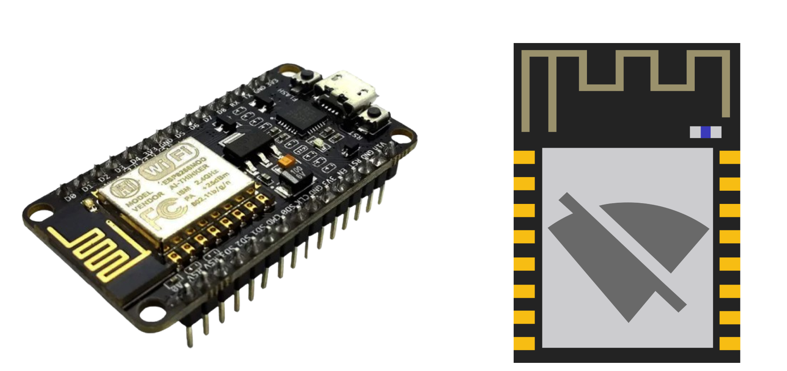

ESP8266 Deauther
Um "deauther" construído com um ESP8266 é um dispositivo projetado para realizar ataques de desautenticação em redes Wi-Fi. Os ataques de desautenticação essencialmente forçam dispositivos conectados a se desconectarem de uma rede Wi-Fi enviando pacotes de desautenticação. Isso pode ser usado para vários fins, como testar a segurança da rede ou, infelizmente, para propósitos maliciosos, como interromper o acesso à rede.
